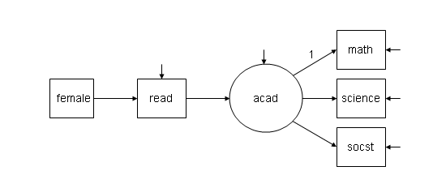
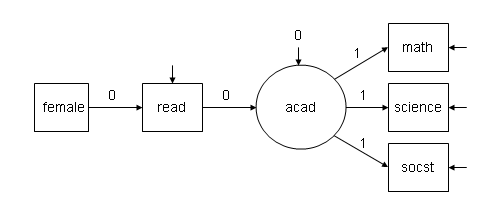

- 1. 版本和日期
- 2. INPUT INSTRUCTIONS 输入的代码
- 3. SUMMARY OF ANALYSIS
- 4. SUMMARY OF DATA
- 5. UNIVARIATE SAMPLE STATISTICS
- 6. MODEL FIT INFORMATION
- 6.1. 注释
- 6.1.1. Number of Free Parameters
- 6.1.2. Loglikelihood
- 6.1.3. Information Criteria
- 6.1.4. Bayesian (BIC) 与 Sample-Size Adjusted BIC
- 6.1.5. Chi-Square Test of Model Fit 与 Chi-Square Test of Model Fit for the Baseline Model
- 6.1.6. RMSEA (Root Mean Square Error Of Approximation)
- 6.1.7. CFI/TLI
- 6.1.8. SRMR (Standardized Root Mean Square Residual)
- 6.1. 注释
- 7. MODEL RESULTS
- 8. STANDARDIZED MODEL RESULTS
- 9. 参考文献
今天有付费咨询的小伙伴问我“如何解读mplus的输出结果”， 是关于验证性因子分析的。
我相信我在之前的视频中已经讲过如何使用mplus做验证性因子分析， 但是确实缺少了如何解读输出结果。
那么现在我们出一个文章， 详细标注一下mplus输出结果， 方便大家学习。
这篇文章使用的mplus的输出结果是使用 mplus 8.3 产生的， 如果输出的文本与你的文本不同， 可能是由于版本不同导致的，
也可能是由于你设置了特殊的mplus输出结果。
版本和日期
mplus输出结果的第一部分如下：
1 | Mplus VERSION 8.3 |
这里很好理解， 介绍了使用软件的版本、 软件作者和结果产生的时间。
INPUT INSTRUCTIONS 输入的代码
1 | INPUT INSTRUCTIONS |
这部分就是我们的原始mplus代码， 这个如果你看了之前的教程， 你应该知道在写什么， 如果你没看我们的视频教程，
可以看这里：mplus入门即专家 。
SUMMARY OF ANALYSIS
1 | SUMMARY OF ANALYSIS |
注释
Number of observations.
分析中使用的样本量。
Number of dependent variables.
因变量的个数， 注意mplus把潜变量的观测指标分类为因变量， 因为测量指标都是箭头指向的。
Observed dependent variables.
因变量的变量列表。
在我们的模型中使用的所有变量都是连续型变量， 所有都划分在 Continuous 中 。
Estimator
估计器就是估计模型中的参数的时候使用的算法， 比如因子载荷， 都是模型的参数，
在一开始我们不知道这些参数是什么， 就使用估计器对参数进行估计。 默认情况下， 估计器是 ML，
也就是极大似然方法， 它的本质含义就是， 选定一组参数使得目前这个样本数据出现的概率最大。
mplus还有很多其他的估计器， 但是最常用的是ML， 其他估计器我们在以后的教程中介绍。
SUMMARY OF DATA
这部分内容非常长， 我们只截取了部分， 省略的部分其实都是 Covariance Coverage 这部分。
1 | SUMMARY OF DATA |
注释
Number of missing data patterns.
因为我们的数据是没有确实数据的， 所以 missing data patterns 就是1个， 这1个就是没有缺失这种模式。
但是有时候缺失模式可能不止1个， 比如举例如下：
1 | MISSING DATA PATTERNS (x = not missing) |
这是一个缺失模式为2的数据， 一种模式是所有数据都没有缺失， 第二种模式是只有在KFT_N3这个变量上的缺失， 其他变量无缺失。
所以缺失模式的数量就是缺失数据的种类， 而根据上面的例子， 缺失模型的数量有两种， 因为这个矩阵有2列。 x 代表没有缺失， 空 代表缺失。
Covariance Coverage.
非缺失数据的比例， 因为我们的数据是没有缺失的， 所以所有的数据都是1（100%）。
那么我们再举一个例子：
1 | Covariance Coveragei |
对角线上的元素是单个变量的非缺失数据占比， 而非对角线上的元素指的是两个变量都不缺失的比率。
从这个数据中， 我们可以解读出来， 变量 ITEM13 有缺失数据， 缺失数据占比是 1-0.994，
如果同时考虑 ITEM13 和 ITEM15， 这两个变量如果有一个缺失就算该样本缺失的话， 样本的缺失率是 1-0.993 。
UNIVARIATE SAMPLE STATISTICS
1 | Variable/ Mean/ Skewness/ Minimum/ % with Percentiles |
注释
Sample Size 样本量
很容易理解， 就是样本的个数， 但是要排除缺失值， 如果变量都没有缺失数据， 那么所有变量的样本量都应该一样
Mean / Variance 均值和方差
mplus的数据摆放格式很奇怪， 比如这里， 它把均值和标准差放到一列， 比如AL1的均值是 4.069 ， AL1 的方差是2.896。
Skewness / Kurtosis 偏度/峰度
变量的偏度和峰度用于衡量变量符合正态分布的成都， 关于这两个概念， 可以查看我之前的视频：
Minimum/ Maximum 变量的最小最大值
如题
% with Min/Max
最小值和最大值的占比
Percentiles
- 20%/60% 位于这两个百分位的数值
- 40%/80% 位于这两个百分位的数值
- Median 中位数
MODEL FIT INFORMATION
1 | MODEL FIT INFORMATION |
注释
Number of Free Parameters
自由参数的数量， 比如因子载荷就是参数， 还有比如潜变量的均值和标准差，
我们可以通过模型计算得到参数的数量， 但是这个不是本教程的重点。
Loglikelihood
对数似然值， 想要理解这个值就必须了解极大似然估计方法， 但是这个超出本教程范围，
我们直观上的理解就是这个值越小代表模型越好， 但是我们看到mplus输出有两个对数似然值：
H0就是代表我们的模型的对数似然值， H1代表无限制模型， 也就是观测变量的均值、方差和协方差是无限制的。
我们要知道 Loglikelihood 值越大越好。
输出这两个值的目的是让你看到， 我们模型增加了限制，但是我们不希望这种限制会显著降低模型的拟合度， 所以这两个值越接近越好。
Information Criteria
Akaike (AIC)
在Mplus中AIC的计算方法来自 Akaike (1987)：
1 | AIC = -2logL + 2*r |
r 代表自由参数的个数， logL 代表对数似然值 。
在我们的例子中， AIC 是 52354.750， 它是如何得到的？
1 | -26030.375 * (-2) + 147 * 2 |
里面用到的数据都是可以在mplus输出中找到。
Akaike 信息准则 (AIC) 是一种数学方法，用于评估模型与其生成数据的拟合程度。
在统计学中，AIC 用于比较不同的可能模型并确定哪一个最适合数据。 总的来说， AIC越小模型拟合越好。
Bayesian (BIC) 与 Sample-Size Adjusted BIC
BIC 与 AIC 类似， 当用于模型选择时，BIC 对模型中参数数量的惩罚程度比 AIC 更大。 因此，平均而言，根据BIC选择模型将得到一个参数较少的模型。
Chi-Square Test of Model Fit 与 Chi-Square Test of Model Fit for the Baseline Model
首先这是卡方值， 卡方值都是越小越好， 在结构方程中， 我们的虚无假设是卡方为0 ， 意思是我们的模型与数据暗含的模型之间没有差异。
P-Value 就是对这个虚无假设进行检验后的概率， 显然这个虚无假设不成立， 因为P-Value 是显著的（低于0.05）。 意思是我们的模型与数据暗示的模型之间有显著差异。
但是因为模型越复杂， 卡方越大， 所以当模型比较复杂的时候， 卡方检验是无效的。
其次， 我们需要理解什么是baseline model， 下面是一个对比， 第一个图是我们设置的模型， 第二个图是 baseline model：
图1 ：

该模型的代码：
1 | Model: |
图2 baseline model：

该模型的代码：
1 | Model: |
怎么理解自由度和基线模型， 可以看下这篇文章SEM如何理解自由度以及空模型和基线模型
RMSEA (Root Mean Square Error Of Approximation)
1 | RMSEA (Root Mean Square Error Of Approximation) |
RMSEA 是 root mean square error of approximation 的简称， 意思是近似均方根误差。
Earlier research (e.g., Browne & Cudeck, 1993; Jöreskog & Sörbom, 1993) 建议当RMSEA小于0.05的时候认为拟合良好，
当RMSEA小于0.08的时候认为合理。可以看到RMSEA越小说明模型拟合越好， 所以mplus输出了一个概率（Probability RMSEA <= .05），
从上面的结果可以得出结论， RMSEA小于0.05的概率是0.036 。
Bentler and Bonett (1980) recommended that TLI > .90 indicates an acceptable fit.
CFI/TLI
Bentler and Bonett (1980) 建议CFI、TLI大于0.9比较好， 不过这个标准其实是主观的， 没有统计依据的。
这些指标叫做相对指标， 因为这个指标的大小是相对于基线模型的。 前面我们介绍过基线模型了， 而相对拟合指标的意思是， 当你的模型比基线模型拟合更好的话， 这个相对指标就比较好。
SRMR (Standardized Root Mean Square Residual)
Hu and Bentler (1999) 认为SRMR低于0.08是可接受的。
MODEL RESULTS
这部分就是模型中参数的估计， 比如By（因子载荷）， with（协方差）和on（路径系数）。
1 |
|
在验证性因子分析中， 最重要的就是因子载荷了， 在mplus中用By来设定因子及其测量指标。
MODEL RESULTS 中列出了因子载荷及其显著性检验， 我们注意到， 一个因子下往往第一个指标的因子载荷是999，
显著性也是999， 注意999代表缺失， 因为在算法中， 我们固定了第一个测量指标的因子载荷， 它就是1， 所以没不必进行显著性检验。
这部分重要的结果就是显著性， 我们要求所有的因子载荷都应该是显著的， 否则这个测量指标就是可以被删除的。
STANDARDIZED MODEL RESULTS
1 | STANDARDIZED MODEL RESULTS |
对于验证性因子分析， 这部分最重要的就是标准化因子载荷， 就是BY语句下面的参数。
一般符合 Hair, et al (2009)及 Fornell and Larcker (1981)的标准就行：标准化因素负荷量大于 0.5, 理想情况应该是大于0.7。
参考文献
关于拟合指标的标准， 参考这篇论文：
Hu, L., & Bentler, P. M. (1999). Cutoff criteria for fit indexes in covariance structure analysis: Conventional criteria versus new alternatives. Structural Equation Modeling, 6, 1-55.